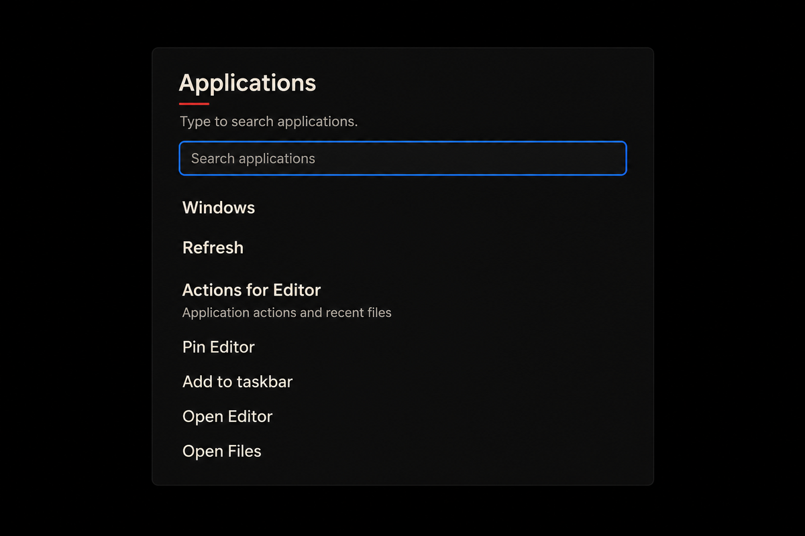
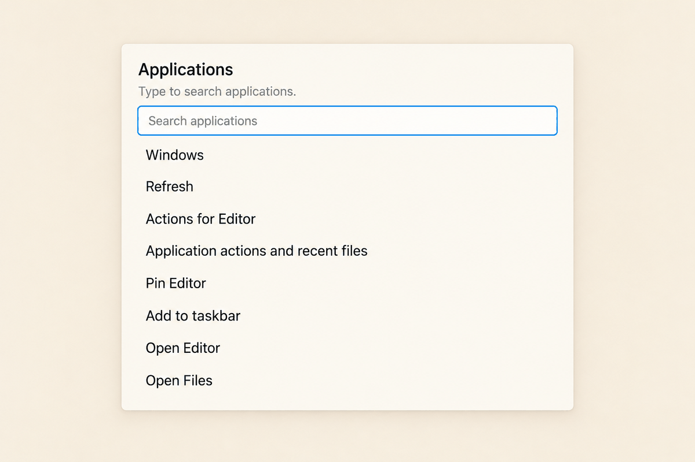

Applications
Static projections show the associated search label and source control order. Controls do not launch applications. Try Applications in the test drive.
Night · empty query
Applications
Type to search applications.
Dawn · empty query
Applications
Type to search applications.
Matching results
Applications
Choose a matching application.
No matching applications
Applications
No matching applications. Change your search or Refresh.
Catalog unavailable
Applications
Application list unavailable. Refresh to try again.
Pin storage unavailable
Applications
Pin storage unavailable. Refresh applications to try again.
Pending
Applications
Opening application…
Submitted · status projection
Applications
Launch submitted.
Refused
Applications
Launch refused. Refresh applications and choose again.
Unknown
Applications
The launch could not be confirmed. Check your windows before opening it again.
Pin movement
Applications
Type to search applications.
High contrast · keyboard focus
Applications
Type to search applications.
200% root text · 320px width
Use Tab to move through the scrollable controls.

